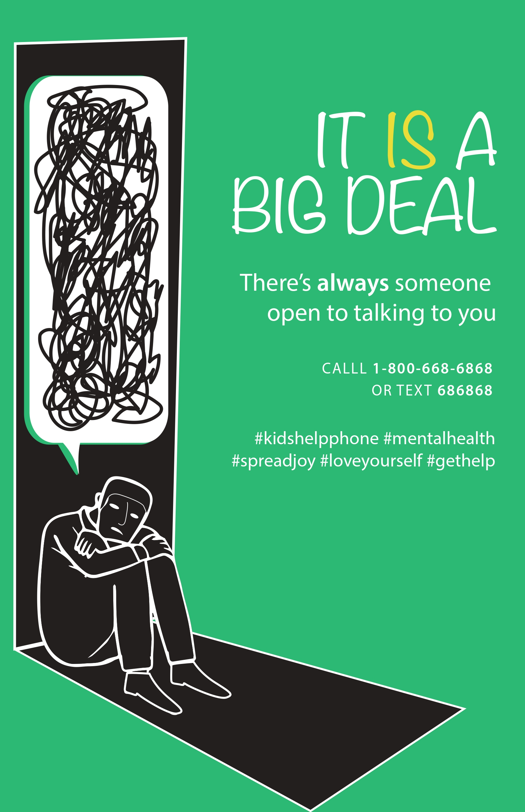

Poster Design Project
It IS a Big Deal
This is the project page for my first unit project, where I designed a poster in Adobe Illustrator to promote mental health awareness

Research Notes #1
- Studies suggest that as many as 14-25% (over 800,000 in Canada) of children and youth experience significant mental health issues.
- What’s even crazier is that this study was conducted in 2013, meaning that this state was for students 10 years ago.
- With the pandemic, and other societal issues, the number of students with significant mental health issues has risen significantly, and it’s crazy how many people are affected by this problem.
- They found that there was clear evidence for the effectiveness of specific school-based strategies for mental health promotion, prevention, treatment, etc.
- A lot of students tend to resort to substance use as a treatment for improper mental health; however, this is a very controversial way of treating these issues and is something that we shouldn’t promote.
- Instead, they suggest that we should have personalized programs for individual students who are going through issues.
Research Notes #2
- In 2020, there were around 37,000 children and youth hospitalizations for mental health disorders.
- There’s been a steady increase in students taking mood and anxiety medications each year; the rates were more than 2 times higher for females than males.
- For example, in 2020, over 700 million students from age 5 to 24 have taken mood and anxiety medications.
- The Kids Help Phone in 2020 reported twice as many interactions across Canada compared with 2019.
- The main takeaway from this website is that so many more students are affected by mental health issues today than ever before, and that's led to an increase in substance use (even if it’s a medication) and unfortunately, more deaths.
Research Notes #3
- This is a good website that focuses on supporting mental health for students. I could link this website in my poster design for people who want help.
- They have resources for education and student support staff, students, parents and caregivers, school and system leaders, and school mental health professionals.
- This website is like Google but specifically for Mental health education - you can search up different topics and find a list of resources to learn more about things.
- They also have a “Help a friend” section for students who want to help their friends that they think are going through mental health struggles.
-
This page shows you how you can help your friends by doing things such as:
- Checking in on each other and taking interest in what’s going on in each other’s lives.
- Being kind - you never know what your friend or anyone else is going through/carrying.
- Don’t put people down - try not spreading rumors, question nasty behavior.
- Include people - Notice others and pull them in, some people just need people to talk to.
- Help each other make safe choices - don’t let peer pressure become a “thing,” you and your friends and classmates can rise above it.
- I think that these points are helpful for my poster because I can add advice like this for people to learn how they can help their friends.
-
Additionally, they have different help phones and steps you can take to help your friend get more support if you’re concerned:
- Talk to a teacher, guidance counselor, or another adult that you can trust at school.
- Talk to a parent/caregiver and ask them to make an appointment with their family doctor.
- Kids Help Phone, a 24/7 phone line where you can speak with a trained counselor at 1-800-668-6868 or text CONNECT to 686868.
Research Notes #4
- The Children’s Mental Health Ontario Centre helps you find a center near you for anyone who needs assistance.
- You just need to type the region you live in, the age of the child, and the type of service you want - then it’ll show you a list of different centers near you that can help that person get assistance.
-
There is also a section on the website that gives signs of mental health struggles in children:
- Do they have extreme outbursts or excessive mood swings?
- Do they worry so much that they are getting stomach aches or headaches?
- Persistent nightmares and lack of sleep.
- Avoiding formerly enjoyable activities, like spending time with friends.
- Unusually quiet, sad or reserved, preoccupied.
- Change in appetite - eating considerably less or even more.
- These suggestions are more targeted towards parents, but some of the advice can still be transferable for friends. I could still link this in my poster for people who want their friends to get assistance.
Poster Sketches
After researching and planning out what kind of poster I wanted to make, it was time to sketch a couple of different ideas just to get a better sense of how I wanted to portray my message.